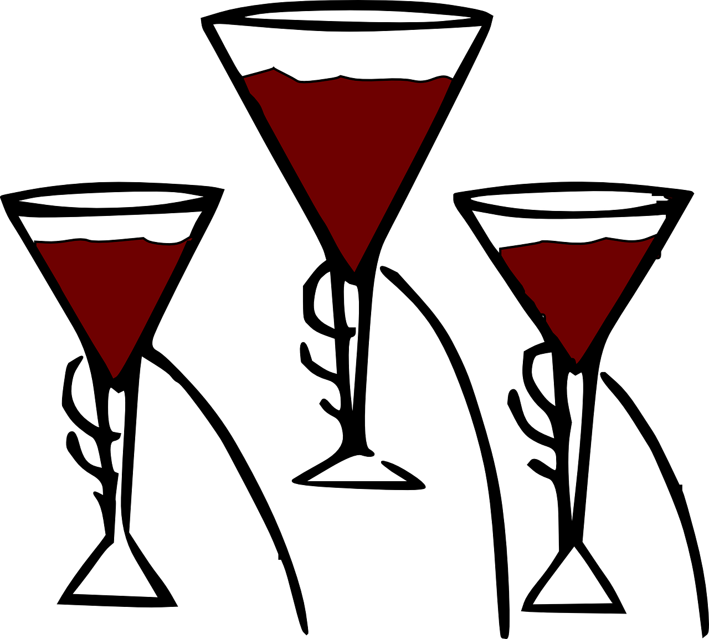

γραφὴ ζῶσα
Living Language in the Written Text
Lesson 10

Copyright 2017 by Jonathan Robie (@bibhumanities) and Micheal Palmer (@grklinguist).
This work is licensed under a Creative Commons Attribution-ShareAlike 4.0 International License.
Γλῶσσα Ἑλληνικκή
Lesson objectives

τί ἐστιν τοῦτο;
οὗτος ἐστιν ὁ λίθος μου.
δὸς μοι τὸν λίθον σου!

τί ἐστιν τοῦτο;
τοῦτό ἐστιν τὸ ποτήριον μου.
δὸς μοι τὸ ποτήριον σου!

τί ἐστιν τοῦτο;
αὕτη ἐστιν ἡ ἐπιστολή μου.
δὸς μοι τὴν ἐπιστολήν σου!
οὗτος ἐστιν ὁ λίθος μου.
δὸς μοι τὸν λίθον σου!
τοῦτό ἐστιν τὸ ποτήριον μου.
δὸς μοι τὸ ποτήριον σου!
αὕτη ἐστιν ἡ ἐπιστολή μου.
δὸς μοι τὴν ἐπιστολήν σου!
δὸς μοι τὸν λίθον / τὸ ποτήριον / τὴν ἐπιστολήν!
| 👫 τίς ἔδωκεν; | 👫 ἐγὼ ἔδωκα 👫 σὺ ἔδωκας 👨 αὐτὸς ἔδωκεν 👩 αὐτὴ ἔδωκεν |
|---|---|
| 👫 τίνι ἔδωκεν; | 👫 μοι, 👫 σοι, 👨 αὐτῷ, 👩 αὐτῇ |
| 📦 τί ἔδωκεν; | 👨 τὸν λίθον, 📦 τὸ ποτήριον, 👩 τὴν ἐπιστολήν |
| 👫 τὸν λίθον τίνος; | 👫 τὸν λίθον μου, 👫 τὸν λίθον σου, 👨 τὸν λίθον αὐτοῦ, 👩 τὸν λίθον αὐτῆς |
John 2:3-5
Κατά Ιωάννην 2:3-5
καὶ ὑστερήσαντος οἴνου
λέγει ἡ μήτηρ τοῦ Ἰησοῦ πρὸς αὐτόν·
Οἶνον οὐκ ἔχουσιν.
καὶ λέγει αὐτῇ ὁ Ἰησοῦς·
Τί ἐμοὶ καὶ σοί, γύναι;
οὔπω ἥκει ἡ ὥρα μου.
λέγει ἡ μήτηρ αὐτοῦ τοῖς διακόνοις
Ὅ τι ἂν λέγῃ ὑμῖν ποιήσατε.
καὶ ὑστερήσαντος οἴνου
καὶ ὑστερήσαντος οἴνου
ὁ οἴνος
ὁ οἴνος
καὶ ὑστερήσαντος οἴνου
ὑστερέω
ὑστερέω
ὑστερήσαντος οἴνου
καὶ ὑστερήσαντος οἴνου
λέγει ἡ μήτηρ τοῦ Ἰησοῦ πρὸς αὐτόν·
λέγει ἡ μήτηρ τοῦ Ἰησοῦ
πρὸς αὐτόν·
λέγει ... πρὸς αὐτόν
λέγει ἡ μήτηρ τοῦ Ἰησοῦ πρὸς αὐτόν·
λέγει ἡ μήτηρ τοῦ Ἰησοῦ
πρὸς αὐτόν·
τίς λέγει πρὸς αὐτόν;
ἡ μήτηρ τοῦ Ἰησοῦ λέγει πρὸς αὐτόν.
πρὸς τίνα λέγει ἡ μήτηρ τοῦ Ἰησοῦ;
πρὸς αὐτὸν λέγει ἡ μήτηρ τοῦ Ἰησοῦ.
καὶ ὑστερήσαντος οἴνου
λέγει ἡ μήτηρ τοῦ Ἰησοῦ πρὸς αὐτόν·
Οἶνον οὐκ ἔχουσιν.
Οἶνον οὐκ ἔχουσιν.
ἔχω
Οἶνον ἔχουσιν.
Οἶνον οὐκ ἔχουσιν.
λέγει ἡ μήτηρ τοῦ Ἰησοῦ·
Οἶνον οὐκ ἔχουσιν
τίς λέγει Οἶνον οὐκ ἔχουσιν;
ἡ μήτηρ τοῦ Ἰησοῦ.
τί λέγει ἡ μήτηρ τοῦ Ἰησοῦ;
Οἶνον οὐκ ἔχουσιν.
καὶ ὑστερήσαντος οἴνου
λέγει ἡ μήτηρ τοῦ Ἰησοῦ πρὸς αὐτόν·
Οἶνον οὐκ ἔχουσιν.
καὶ λέγει αὐτῇ ὁ Ἰησοῦς·
καὶ λέγει αὐτῇ ὁ Ἰησοῦς·
τίς λέγει;
ὁ Ἰησοῦς λέγει.
τίνι λέγει;
αὐτῇ λέγει.
πρὸς τίνα λέγει;
πρὸς αὐτὴν λέγει.
καὶ λέγει αὐτῇ ὁ Ἰησοῦς·
Τί ἐμοὶ καὶ σοί, γύναι;
Τί ἐμοὶ καὶ σοί;
Τί ἐμοὶ καὶ σοί, γύναι;
γύναι
Τί ἐμοὶ καὶ σοί, γύναι;
💃 ἡ γυνή
🕺 ὁ ἀνήρ
Τί ἐμοὶ καὶ σοί, γύναι;
ὦ γύναι! 🕺
💃
καὶ λέγει αὐτῇ ὁ Ἰησοῦς·
Τί ἐμοὶ καὶ σοί, γύναι;
οὔπω ἥκει ἡ ὥρα μου.
ἡ ὥρα
🕛
ἡ ὥρα
οὔπω ἡ ὥρα μου.
οὔπω ἥκει
00:00:04
ἥκει ἡ ὥρα μου;
οὔπω...
οὔπω ἥκει...
00:00:03
ἥκει ἡ ὥρα μου;
οὔπω...
οὔπω ἥκει...
00:00:02
ἥκει ἡ ὥρα μου;
οὔπω...
οὔπω ἥκει...
00:00:01
ἥκει ἡ ὥρα μου;
οὔπω...
οὔπω ἥκει...
00:00:00
ἥκει ἡ ὥρα μου;
ναί! ἥκει ἡ ὥρα σου!
καὶ λέγει αὐτῇ ὁ Ἰησοῦς·
Τί ἐμοὶ καὶ σοί, γύναι;
οὔπω ἥκει ἡ ὥρα μου.
λέγει ἡ μήτηρ αὐτοῦ
τοῖς διακόνοις
λέγει ἡ μήτηρ αὐτοῦ
τοῖς διακόνοις
τοῖς διακόνοις
ὁ διάκονος

οἰ διάκονοι

λέγει ἡ μήτηρ αὐτοῦ
τοῖς διακόνοις
τίς λέγει;
ἡ μήτηρ αὐτοῦ λέγει.
τίνι λέγει;
τοῖς διακόνοις λέγει.
λέγει ἡ μήτηρ αὐτοῦ τοῖς διακόνοις
Ὅ τι ἂν λέγῃ ὑμῖν ποιήσατε.
λέγει ἡ μήτηρ αὐτοῦ τοῖς διακόνοις
Ὅ τι ἂν λέγῃ ὑμῖν ποιήσατε.
Ὅ τι ἂν λέγῃ λέγω.
| 👨 αὐτὸς λέγει | 👨 ἐγὼ λέγω |
|---|---|
| χάρις! | χάρις! |
| Οἶνον οὐκ ἔχουσιν. | Οἶνον οὐκ ἔχουσιν. |
κατέλαβες;

John 2:1-2
Κατά Ιωάννην 2:1-2
Καὶ τῇ ἡμέρᾳ τῇ τρίτῃ
γάμος ἐγένετο
ἐν Κανὰ τῆς Γαλιλαίας,
καὶ ἦν ἡ μήτηρ τοῦ Ἰησοῦ ἐκεῖ·
ἐκλήθη δὲ καὶ ὁ Ἰησοῦς
καὶ οἱ μαθηταὶ αὐτοῦ
εἰς τὸν γάμον.
δὸς μοι τὸν λίθον / τὸ ποτήριον / τὴν ἐπιστολήν!
| 👫 τίς ἔδωκεν; | 👫 ἐγὼ ἔδωκα 👫 σὺ ἔδωκας 👨 αὐτὸς ἔδωκεν 👩 αὐτὴ ἔδωκεν |
|---|---|
| 👫 τίνι ἔδωκεν; | 👫 μοι, 👫 σοι, 👨 αὐτῷ, 👩 αὐτῇ |
| 📦 τί ἔδωκεν; | 👨 τὸν λίθον, 📦 τὸ ποτήριον, 👩 τὴν ἐπιστολήν |
| 👫 τὸν λίθον τίνος; | 👫 τὸν λίθον μου, 👫 τὸν λίθον σου, 👨 τὸν λίθον αὐτοῦ, 👩 τὸν λίθον αὐτῆς |